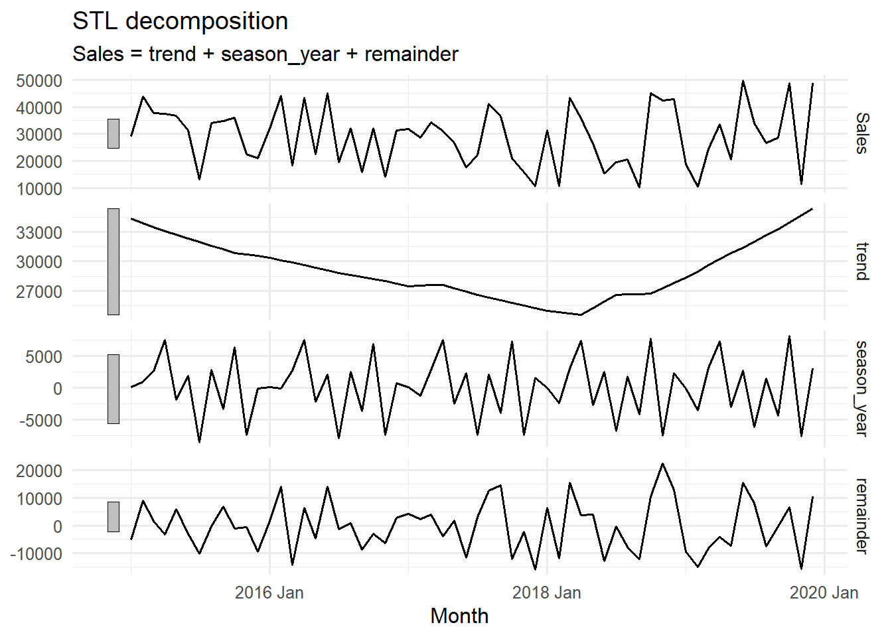
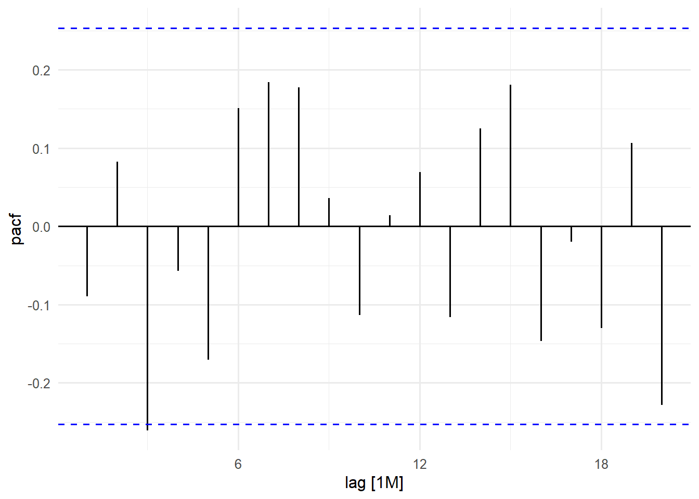
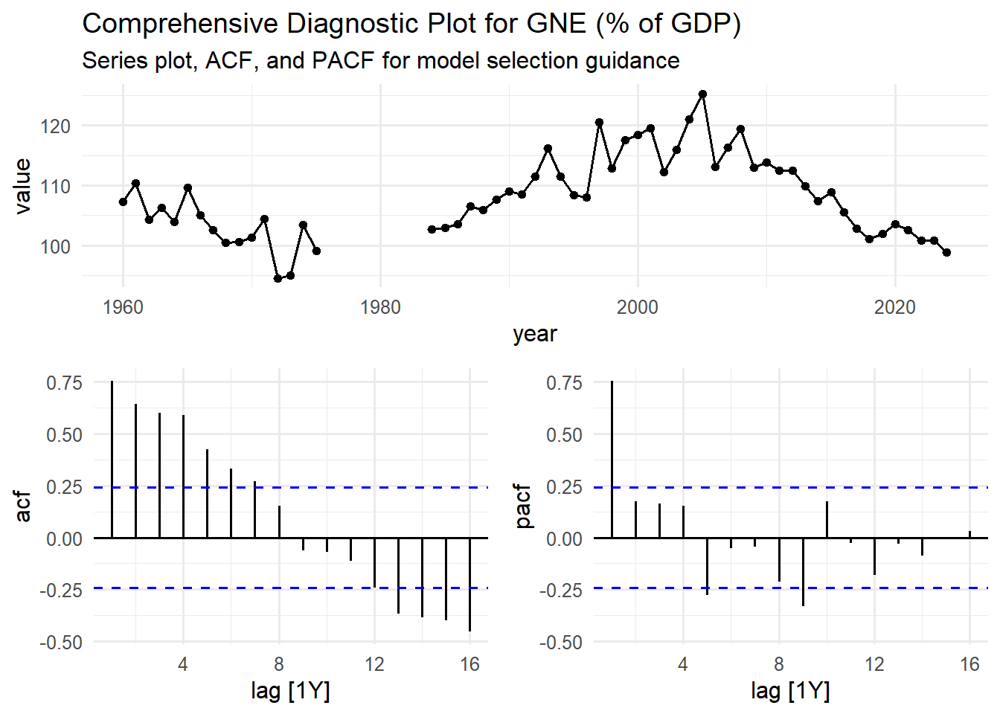

# Decompose the Sales series using STL
dcmp <- sales_ts |>
model(STL(Sales))10 Exploring Patterns with feasts and fabletools
Visual inspection with ggplot2 and autoplot() gives us an intuitive feel for our time series. We might suspect a trend, see hints of seasonality, and notice unusual observations. But how can we move from intuition to a more formal, statistical understanding of these components? This is where the feasts and fabletools package comes in.
The package feasts, which stands for Feature Extraction And Statistics for Time Series, is a core part of the tidyverts framework which we have mentioned earlier (Chapter 1). Its purpose is to provide a toolkit for analysing the features of a time series data (tsibble), while fabletools supplies the underlying infrastructure that makes this analysis seamless and efficient. Think of it as a Doctor’s diagnostic kit: It does not treat the patients (that is the job of forecasting models in Chapter 14 and Chapter 15), but it runs the tests needed to understand what is going on.
10.1 Decomposing a Time Series with STL()
A fundamental concept in time series analysis is decomposition. The idea is to split, \(y_{t}\), into three additive parts (where the time series is represented as the sum of its parts):
- Trend (\(T_{t}\)): The long-term progression (the increasing or decreasing direction over time)
- Seasonal (\(S_{t}\)): Regular, repeating patterns over a fixed period (example, yearly or quarterly).
- Remainder (\(R_{t}\)): The “leftover” part after trend and seasonality are removed; this is often considered the random noisy component.
\[ y_{t}=Trend_{t}+Seasona_{t}+Remainder_{t} \]
10.1.1 Basic and Advanced Decomposition with Special Arguments
The most robust method for this STL, which stands for Seasonal and Trend decomposition using Loess. Loess is a method for estimating non-linear relationships, and its use makes STL method versatile and robust to outliers as it handles a wide range of seasonal and trend shapes. The feasts package provides the STL() function to perform this decomposition directly on a tsibble object. Let us decompose the Sales series in the sales_ts data.
The simplest implementation use the default STL() function, which automatically selects suitable window sizes for the trend and seasonal components as illustrated in the above code. The model() function from the fabletools package is used to fit a “model” (STL Decomposition) to the tsibble sales_ts. The variable to decomposed is specified inside the STL function.
For greater control you can include the variable of interest as a formula where you manually define the smoothing window for the trend and the seasonal components using the special arguments trend and season.
# decompose Sales series using STL with special arguments
dcmp_sp <- sales_ts |>
model(stl = STL(Sales ~ trend(window = 7) + season(window = "periodic")))trend(window = 7) sets the window size for the trend smoothing, specifying that a trend should be estimated using a window of \(2\times7+1=15\) observations. This comes from how the Loess (Locally Estimated Scatterplot Smoothing) method is typically implemented within the STL algorithm to calculate the trend component. A larger window results in a smoother trend.
10.1.2 Extracting and Viewing Components
The dcmp object we created now contains the fitted decomposition model. To see the results, we use the components() function.
# extract the components from the decomposition model
components(dcmp)This returns a fabletools object dataset “dable” (decomposition table) which is a tsibble-like data structure for representing decompositions. It contains the original time index with the Sales series together with four new columns;
-
trend: The estimated trend component. -
season_year: The estimated seasonal component. -
remainder: The residual or error component (noise). -
season_adjust: The final seasonally adjusted series (Original Series - Seasonal Component)
This allows for direct analysis and visualisation of how much of the variations in the Sales series is attributed to long-term movements, seasonal factors, and irregular noise. The autoplot() function when applied on this dable output will automatically generate a multi-panel plot displaying the decomposition of the Sales series into its components as calculated by the STL method.
components(dcmp) |>
autoplot(linewidth = 0.7)Warning: Using `size` aesthetic for lines was deprecated in ggplot2 3.4.0.
ℹ Please use `linewidth` instead.
ℹ The deprecated feature was likely used in the ggtime package.
Please report the issue to the authors.
The plot features for main panels; the original Sales time series (\(y_{t}\)), The long term direction of the trend, the estimated periodic pattern and the noise or irregular fluctuations.
From the STL decomposed plot we see that the original series is highly affected by both seasonality and a trend. The smooth long-term trend shows the overall level of sales over the years. Its starts around 35000 and dips noticeably around early 2018 and then rises back up towards 40,000 by late 2019
The seasonal panel shows a strong, consistent repeating pattern. The vertical scale (from approximately -5000 to 5000) indicates the magnitude of the seasonal effect relative to the trend.
The last panel shows the irregular, left over variations (from approximately -10,000 to 10,000). The spikes are quite large relative to the seasonal components. This implies a high amount of irregular unexplained variability in the data. The large spikes indicate months where sales were unusually high or low, which could be attributed to a variety of factors.
10.2 Analysing Autocorrelation Patterns
Another crucial property of time series is autocorrelation. Simply put, autocorrelation measures the relationship between a value in a series and its past values (called “lags”). For example, is today;s sales figure correlated with the sales figure from the same quarter last year? This is a key concept for building effective forecasting models.
The feasts package provides two very useful functions, ACF (Autocorrelation Function) and PACF() (Partial Autocorrelation Function) to do this. Below, we see how to check autocorrelation for our Sales series.
10.2.1 Autocorrelation Function (ACF)
The ACF measures the correlation between a time series \(y_{t}\) and its past values \(y_{t-k}\) (where \(k\) is the lag) at all observed lags, without isolating the effect of intermediate lags. High autocorrelation at a seasonal lag (e.g. lag 12 for monthly data) is a strong indicator of seasonality. We use the ACF() function to calculate these correlations for the Sales series
# compute the Autocorrelation for Sales
sales_acf <- sales_ts |>
ACF(Sales)
sales_acf# A tsibble: 17 x 2 [1M]
lag acf
<cf_lag> <dbl>
1 1M -0.0897
2 2M 0.0896
3 3M -0.271
4 4M -0.00704
5 5M -0.191
# ℹ 12 more rowsWe can also specify the maximum number of lags to use for computing the correlations with the lag_max argument. By default it calculates this number using the formula “\(10\times log_{10}(N/m)\)”.
# compute autocorrelation with specified lags
sales_acf <- sales_ts |> ACF(Sales, lag_max = 24)The resulting sales_acf object is a tsibble that contains the correlation coefficient at the different lags. A significant spike at a particular lag indicates a strong relationship.
We can visualise the output for easier interpretation using autoplot(). The plot of the ACF displays a series of vertical lines known as correlogram, where the height of each line represents the correlation at that specific lag.
autoplot(sales_acf)
The dashed blue lines in the plot represents the significance bounds. Any bar extending outside these bounds is considered a statistically significant correlation. The spikes do not show any slow, steady decline in the values from positive to negative. This suggests there is no strong trend.
There is no single large significant spike at regular intervals (like at lag 12M or 24M for monthly data). This indicates a lack of strong consistent annual seasonality. However there is a pattern of significant spikes in the first few lags, followed by a series of alternating pattern of negative and positive correlations in the short term. This implies a short term cyclical behaviour with a period of about 6 months.
This is what this ACF plot might mean in a business context:
- A customer makes a purchase (Lag0).
- The negative correlation at Lag 3 suggests that three months after a purchase, sales tend to be opposite to what they were. If sales were high in a given month, they are likely to be low three months later and vice versa.
- The positive correlation at Lag 6 suggests that whatever the sales pattern was at a given time, it tends to repeat itself every 6 months.
The other spikes later on at lag 14, 15 and 18 are likely harmonics of the primary 6-month cycle. Once a cyclical pattern is in the data, it can create correlations at multiple or fractions of its main period. They are part of the same underlying effect and not separate seasonal effects
10.2.2 Partial Autocorrelation Function (PACF)
The PACF calculates the correlation between \(y_{t}\) and \(y_{t-k}\) after removing the influence of the intermediate lags \(y_{t-1}\), \(y_{t-2}\), \(\dots\), \(y_{t-(k-1)}\). This helps to precisely identify the direct relationship between the current observation and a past observation, filtering out the “flow-through” correlation effects. Think of it this way: The sales at lag 3 (3 months ago) might be correlated with sales today because;
- Sales today are correlated with sales at lag 1 (ACF at lag 1)
- Sales at lag 1 are correlated with sales at lag2.
- Sales at lag 2 are correlated with sales at lag 3.
The PACF cuts through this chain and asks: “If I already know the values at lags 1 and 2, does lag 3 still provide new, direct information today?
The PACF() function is used to calculate the partial autocorrelations.
# compute the Partial Autocorrelation for Sales
sales_pacf <- sales_ts |>
PACF(Sales, lag_max = 20)
sales_pacf# A tsibble: 20 x 2 [1M]
lag pacf
<cf_lag> <dbl>
1 1M -0.0897
2 2M 0.0822
3 3M -0.260
4 4M -0.0571
5 5M -0.170
# ℹ 15 more rowssimilar to the ACF, the sales_pacf object also contains the partial autocorrelation values for each lag. We can again visualise this output using autoplot(). The PACF plot is primarily used to identify the order of an autoregressive (AR) component in a model
sales_pacf |> autoplot()

The most important aspect of our PACF plot is the behaviour in the first few lags. We notice that the is a significant negative spike at lag 3, with the subsequent lags generally becoming smaller and non significant, with no clear pattern. This is a classic signature of a PACF plot where the beginning few vertical bars shows a significant spike and the cuts off.
The PACF and ACF plots are considered diagnostic plots for identifying an ARIMA model’s specification (more information in Chapter 15).
10.3 Feature Based Explorations
Another powerful aspect of the fabletools is its ability to compute a wide array of summary statistics or features from a time series. This is incredibly useful when you have many series (like in the gh_ts data with several indicators) and you want to quickly understand their characteristics or group similar series together.
10.3.1 Identifying Seasonal Patterns and Strength
The most common feature to compute is the seasonal strength, which measures quantitatively how dominant the recurring patterns are compared to the overall trend and random noise. This is typically done using the STL decomposition. We demonstrate this with the tsibbledata::aus_production tsibble dataset which contains the quarterly production of selected commodities in Australia.
# convert wide data to long
aus_prod_long <- aus_production |>
pivot_longer(cols = -Quarter, names_to = 'Product', values_to = 'Quantity')
# calculate seasonal strength and other key features
aus_prod_features <- aus_prod_long |>
features(Quantity, features = feat_stl)
# Display seasonal and trend metrics
aus_prod_features |>
select(Product, contains(c('seasonal', 'trend')))# A tibble: 6 × 5
Product seasonal_strength_year seasonal_peak_year seasonal_trough_year
<chr> <dbl> <dbl> <dbl>
1 Beer 0.952 0 2
2 Bricks 0.859 3 1
3 Cement 0.834 3 1
4 Electricity 0.906 3 1
5 Gas 0.981 3 1
# ℹ 1 more row
# ℹ 1 more variable: trend_strength <dbl>You have to change the data to a long format so that the tsibble has a ‘key’ variable (Product). The structure is essential for the fabletools feature functions. The features() function calculates metrics based on the STL decomposition for each Product series separately. The feat_stl feature set automatically returns several key metrics including:
-
seasonal_strength_year: Measures the proportion of variance explained by the seasonal components. The values range between 0 and 1 (higher values mean stronger seasonality). -
seasonal_peak/seasonal_trough_year: Identifies the periods (Month for monthly data & Quarter for Quarterly data) of highest and lowest seasonal activity -
trend_strength: Measures the proportion of variance explained by the trend component (higher values mean stronger trend)
10.3.2 Comprehensive Feature Analysis
Beyond standard seasonality, fabletools allows you to calculate a wide array of statistics that characterises every nuance of a time series’ behaviour, including measures of shape, volatility and distribution.
STL Features for Non-Seasonal Characteristics
The STL feature set offers metrics beyond simple strength, focusing on the shape of the trend and the nature of the remainder (noise).
# compute stl feature set for non-seasonal (yearly) data
stl_features <- gh_ts |>
features(value, features = feature_set(tags = 'stl'))This line of code within the the feature() function; faeture_set(tags = 'stl') instructs fabletools to compute the full set of STL-related features. These features include;
trend_strength:Measures how strong the trend component is relative to the remainder (noise). Values close to 1 have strong trend and values close to zero have weak or no trend. Example “Female population” (\(0.9999953\)) has and extremely strong trend but”Annual GDP growth rate” (\(0.3091004\)) has a weak trend.spikiness:Measures the presence of sharp intermittent spikes in the remainder (noise) component. High values = more spiky/volatile. Example “Rural Population” has extremely high spikiness (\(2.086846\times10^{14}\)), indicating major irregularities.linearity:Measures how linear the trend is (vs curved) based on fitting a linear model to the trend component. Positive values suggest trend can be well-approximated by a straight line. Negative values suggest non-linear trends. *“Cereal yield _kg per hectare”* (\(3395.64\)) is highly linear.curvature:Measures the degree of bending in the trend. It complements linearity -captures how much the trend curves. Higher absolute values means more curved. “Female population percentage” (\(-1.741482\)) shows negative curvature (concave down)stl_e_acf1:First order autocorrelation of the remainder component (lag1). The values ranges from -1 to 1. Values near 0 means remainders are random (which is good!). High positive or negative values indicates patterns left in residuals that the STL decomposition did not capture.stl_e_acf10:Sum of squares of the first 10 autocorrelations of the remainder. Measures the overall autocorrelation structure in residuals. Low values are good and high value indicate significant patterns remain in the residuals.
Custom Feature Calculations with Lambda Expressions
If a desired feature is not pre-defined, you can compute it using a built in function or a simple lambda expression (a short, anonymous function)
# compute any other features using their function or a lambda expression
percentile_features <- aus_prod_long |>
features(Quantity, features = ~quantile(., na.rm=TRUE)) features = ~quantile(., na.rm=TRUE) defines a custom function to run on the Quantity values. The ~ symbol creates the lambda expression and the . refers to the vector of time series values. This is a compact way of calculating the \(0^{th}\), \(25^{th}\), \(50^{th}\), \(75^{th}\) and \(100^{th}\) percentiles for each Product series, giving insight into its distribution and volatility range.
Multiple Custom Features (List of Functions)
You can also calculate several custom features simultaneously by passing a named list of functions to the features argument.
# A tibble: 22 × 4
indicator_name sd median mean
<chr> <dbl> <dbl> <dbl>
1 Annual GDP growth rate 4.20 4.40 3.71
2 Annual population groeth rate 0.290 2.46 2.50
3 Cereal yield _kg per hectare 476. 1141. 1249.
4 Crude death rate_per 1000 people 4.18 11.4 12.6
5 Female population 4132889. 8127176 8926929.
# ℹ 17 more rowsThe custom anonymous functions supplied to the features argument in a list, calculates three measures of central tendency and dispersion. For every indicator in the gh_ts data, the standard deviation (sd), the median, and the mean are calculated. This can help you understand the average level of the series and its overall volatility across the entire period.
10.4 Comprehensive Diagnostic Plots for Model Selection
The gg_tsdisplay() function from the feasts package (now often found in the ggtime package) makes it possible to create specialised plots that combine multiple diagnostics to guide model selection. Especially an ARIMA model.
# Create a comprehensive diagnostic plot for Gross National Expenditure
gh_ts |>
filter(indicator_name == "Gross national expenditure (% of GDP)") |>
gg_tsdisplay(value, plot_type = "partial") +
labs(title = "Comprehensive Diagnostic Plot for GNE (% of GDP)",
subtitle = "Series plot, ACF, and PACF for model selection guidance")

Here we filter the gh_ts data to isolate the specific series of interest; the Gross national expenditure (% of GDP) indicator. gg_tsdisplay(value, plot_type = "partial") generates a three panel plot:
- The main panel (top) shows the Series Plot of the
Gross national expenditure (% of GDP)values over the time period - The bottom left panel shows the ACF
- The bottom right panel shows the PACF (specified by
plot_type = "partial"))
The plot_type argument controls what type of plot is displayed in the bottom right panel it can either be a PACF, histogram, lagged scatterplot or spectral density depending on what you specify. The values that can be specified for this argument can be found in its help documentation.
The series show high volatility with no clear trend, the ACF shows a slow decay where the spikes remain significantly positive until lag 7, the PACF shows a sharp cut-off after Lag 1. All these indications serve as diagnostic signs for a forecasting model selection.
10.5 Summary and Next Steps
In this chapter we moved beyond visual inspection and explored the feasts and fabletools package to perform a rigorous, quantitative diagnosis of our time series. We systematically:
Decomposed the a time series using
STLto isolate the trend, seasonal and remainder components.Analysed autocorrelation with
ACFandPACFto understand how each value depends on its past.Quantified pattern strength using
features()to calculate statistics likeseasonal_strengthandtrend_strenght, confirming our visual observations with hard numbers.Created diagnostic plots using
gg_tsdisplay()to get comprehensive multi-panel view of a time series’ behaviour, which is essential for guiding our model selection.
With a deep understanding of patterns in our data, we are now ready to build forecasting models. But before we do, a critical step remains. In the next section, we will cover “Preparing Data for Forecasting”.